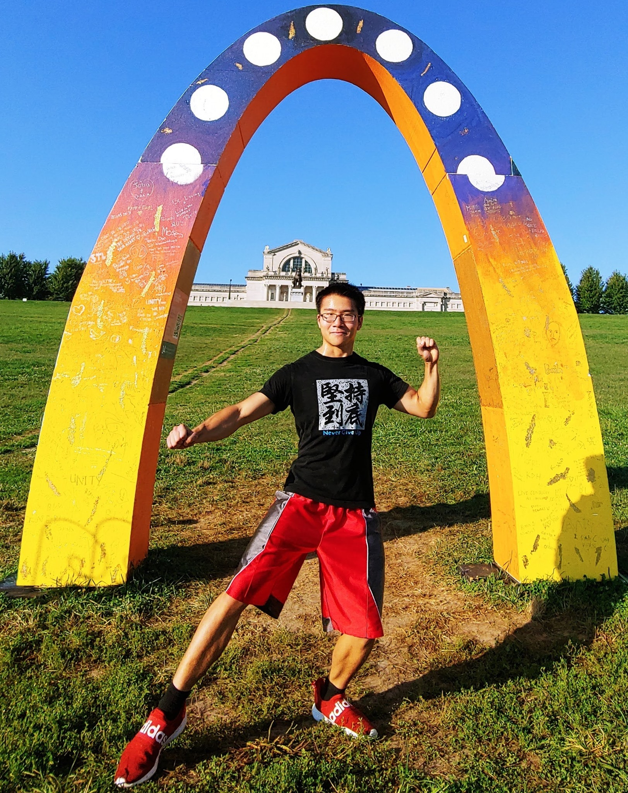

"Saint Louis. Born, raised, pre-school through PhD."
"Saint Louis. Born, raised, pre-school through PhD."
I am a fourth-year PhD candidate with the Department of Computer Science and Engineering at Washington University in St. Louis, advised by Dr. Tao Ju. My research integrates geometry, topology, and computer graphics to address challenges in geometry modeling and biomedical and plant imaging. I am currently being funded by the Imaging Sciences Pathway Fellowship from Washington University in St. Louis. Before enrolling in my current PhD program, I earned my bachelor's degree in Computer Science from Washington University in St. Louis in 2017.
Recently, I had a paper accepted for publication to SIGGRAPH Asia 2020 about a novel global optimization algorithm for topological simplification of 3D shapes. This past summer I did a research internship with Facebook Reality Labs in the area of computer graphics in Virtual and Augmented reality.
Additionally, I am collaborating with scientists at the Donald Danforth Plant Science Ceter to quantify the geometric architectures of grasses such as corn and sorghum from X-ray CT images. Together with Mao Li, Mon-Ray Shao, Christopher N. Topp, and Toby Kellogg, we published a paper which made the cover of New Phytologist Journal.
Some of my hobbies include dragon dancing, practicing Chinese, and anything related to the fitness or the outdoors. I am a morning person.
We present a novel algorithm for simplifying the topology of a 3D shape, which is characterized by the number of connected components, handles, and cavities. Existing methods either limit their modifications to be only cutting or only filling, or take a heuristic approach to decide where to cut or fill. We consider the problem of finding a globally optimal set of cuts and fills that achieve the simplest topology while minimizing geometric changes. We show that the problem can be formulated as graph labelling, and we solve it by a transformation to the Node-Weighted Steiner Tree problem. When tested on examples with varying levels of topological complexity, the algorithm shows notable improvement over existing simplification methods in both topological simplicity and geometric distortions.

To simplify the topology of a 3D shape (a), performing cutting alone (b) or filling alone (c) results in excessive changes, such as removing large components (box C in (b)), creating long bridges to distant islands (box A in (c)) and large patches to fill in a handle (box B in (c)). Given a set of pre-computed cuts and fills, our method optimally selects a subset of them to maximally simplify topology while minimizing the impact on the geometry (d). (β: number of connected components, handles, and cavities; д: geometric cost)
Inflorescence architecture in plants is often complex and challenging to quantify, particularly for inflorescences of cereal grasses. Methods for capturing inflorescence architecture and for analyzing the resulting data are limited to a few easily captured parameters that may miss the rich underlying diversity. Here, we apply X-ray computed tomography combined with detailed morphometrics, offering new imaging and computational tools to analyze three-dimensional inflorescence architecture. To show the power of this approach, we focus on the panicles of Sorghum bicolor, which vary extensively in numbers, lengths, and angles of primary branches, as well as the three-dimensional shape, size, and distribution of the seed.


In 2018-2019, I organized a dragon dance team with members from around the Saint Louis area, many coming from Washington University and the Saint Louis Modern Chinese School. We called ourselves the Saint Dragon Team and performed at various festivals and holidays including the Chinese Culture Days at the Missouri Botanical Garden, the Gateway Dragon Boat Festival, and the Independence Day and Thanksgiving Day parades in Downtown St. Louis. Shown in this video was our performance for the opening ceremony of the Gateway Dragon Boat Festival in 2018 at Creve Coeur Lake. We also made the news a couple of times, such as in the St. Louis Post Dispatch for our participation at the Independence Day parade. The event was covered on KMOV news and televised live nationally.
I really enjoyed my internship with the Donald Danforth Plant Science center in the summer of 2018 because we got to spend some time outdoors and I got to interact with the subject matter of my research. The first two pictures show me planting Sorghum seeds during a field trip to some farmlands near Columbia, MO at the beginning of the internship, while the last one shows me washing the dirt off of their roots after harvesting.


This was the not my first "farming" experience. On my first trip to my father's hometown in rural Lanshan County, Hunan, China, I got a first-hand experience of what life is like out in the fields. The first picture shows "farmer Dan" on the first trip back in 2004 while the others show visits in later years.